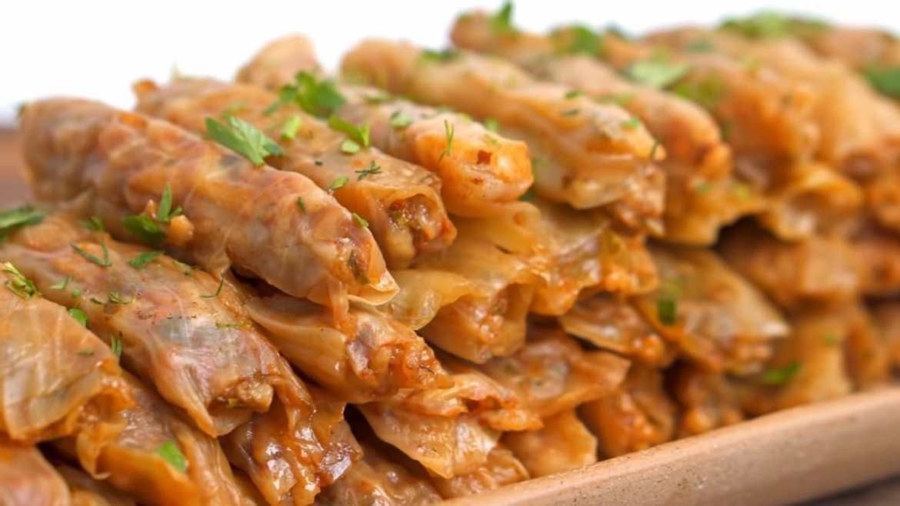

Stuffed Cabbages | محشي كرنب

Description
While not as amazing as the grape leaves variant, it's still amazing..
Completely vegan, healthy(in moderation), and absolutely delicious Egyptian staple.
Ingredients
- Green Cabbages
- A large white onion
- Vegetable stock
- Garlic
- Olive oil
- Fresh herbs. Parsley, mint, and coriander
- Tomato sauce and paste
- Salt and pepper, and if you have them بهارات
Steps
- Prep the cabbage leaves
- Blanche the leaves(and try to ignore the smell)
- Mix the rice with onions, tomato, and spices
- Stuff the cabbage leaves
- Cook in vegetable stock
- Enjoy
Home